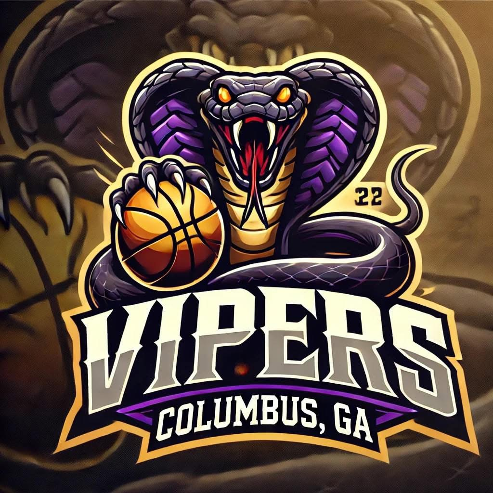

PBA TEAM
DOTHAN SNIPERS
PBA
These teams have been added on their own page so the homepage can stay centered on the ABA presentation. Dothan Snipers and Columbus Vipers now have a clean, separate presence inside the A&T Sports website.
The two PBA identities are displayed with matching image panels so the different source image sizes still feel consistent and polished on the website.

The Dothan Snipers are now separated from the homepage and presented as part of the dedicated PBA side of the website. This makes the league distinction clear while still keeping the branding tied back to A&T Sports.
The Columbus Vipers are also carved out into the PBA presentation so the homepage does not blur ABA and PBA programs together. The design keeps the visual system consistent while letting the purple-and-gold identity still stand out.